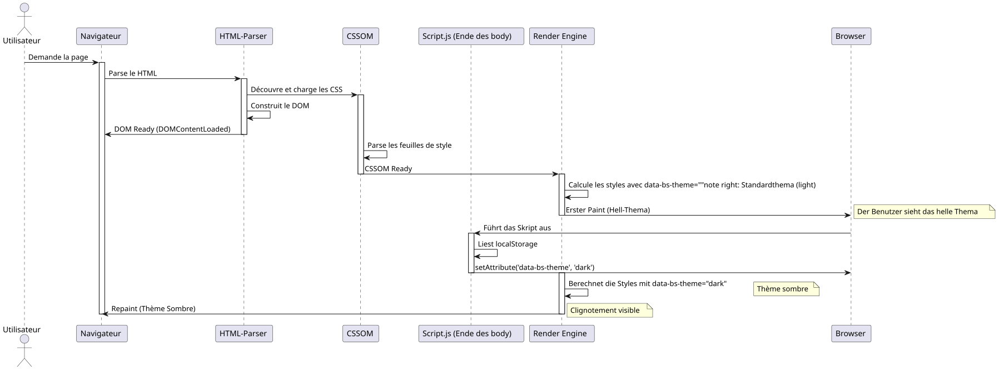

Die Kunst des Vorladens: Das "Flash" des Themes mit JavaScript und CSS entfernen
Publié le 15 November 2025
Zusammenfassung
In diesem detaillierten technischen Artikel, untersuchen wir, wie man einen Theme-Wähler (light/dark) ohne den lästigen Blinkeffekt implementiert, der beim Laden der Seite auftritt. Wir analysieren den Rendering-Zyklus des Browsers im Detail, die tiefen Ursachen des FOUC (Flash of Unstyled Content), und schlagen eine robuste Lösung vor, die auf synchronem Vorladen basiert im`<head>`. Diese Technik garantiert ein flüssiges und professionelles Benutzererlebnis.
Das Problem: Dieses verdammte Theme-Flackern
Ein Albtraum für die Benutzererfahrung
Stell dir die Szene vor: Du hast Stunden damit verbracht, ein wunderschönes dunkles Theme für deine Webanwendung zu entwerfen. Die Farben sind perfekt ausgewogen, der Kontrast ist optimal, und deine Benutzer lieben diese Option. Aber es gibt ein peinliches Problem: Bei jedem Seitenreload wird für einen Bruchteil einer Sekunde das standardhelle Theme angezeigt, bevor das dunkle Theme übernimmt.
Dieser visuelle „Flash“, obwohl kurz (manchmal weniger als 100 ms), ist sofort für das menschliche Auge wahrnehmbar und erzeugt ein unangenehmes Erlebnis. Für Benutzer, die das dunkle Thema aus Gründen des visuellen Komforts oder der Barrierefreiheit gewählt haben, kann dieses Flackern sogar schmerzhaft sein, insbesondere in einer schwach beleuchteten Umgebung.
Der FOUC: Ein altes Web-Problem
Dieses Phänomen ist eine Variante dessen, was man „Flash of Unstyled Content“ (FOUC) nennt, ein klassisches Problem der Webentwicklung, das bis zu den Anfängen von CSS zurückreicht. Der FOUC tritt auf, wenn der Browser vorübergehend HTML-Inhalt ohne angewendete CSS-Stile anzeigt, was einen Blitz von unstylisiertem Inhalt erzeugt.
In unserem speziellen Fall sprechen wir nicht von vollständig unstilisiertem Inhalt, sondern vielmehr von einemBlitz des falschen Themas(FOWT) - Der Inhalt wird gestylt, aber mit dem falschen Thema. Das ist besonders frustrierend, denn es zeigt, dass unsere Anwendung die Benutzerpräferenz bei jedem Seitenladen "vergisst".
Auswirkung auf die Wahrnehmung von Qualität
Dieses Problem, obwohl technisch, hat wichtige Auswirkungen auf die Wahrnehmung der Qualität deiner Anwendung :
Mangel an PoliturDas Flackern vermittelt den Eindruck einer unvollständigen oder schlecht optimierten Anwendung. Benutzer verbinden solche kleinen visuellen Mängel oft mit einem allgemeinen Mangel an Professionalität.
KohärenzabbruchDie App scheint die Benutzerpräferenzen zu "vergessen", wodurch ein Gefühl des Nicht-Synchronseins zwischen der Schnittstelle und den Erwartungen entsteht.
visuelle Ermüdung: Für lichtempfindliche Benutzer oder Personen, die unter Migräne leiden, kann dieser Lichtblitz mehr sein als nur eine einfache ästhetische Unannehmlichkeit.
Wahrgenommene Leistung: Ironischerweise kann dieses Blinken, obwohl Ihre Seite schnell lädt, den Eindruck erwecken einer langsamen oder wenig reaktiven Anwendung.
Technische Analyse des Problems
Um zu verstehen, wie dieses Problem gelöst werden kann, muss man zunächst verstehen, warum es auftritt. Das Flackern tritt aufgrund einer zeitlichen Verzögerung zwischen drei kritischen Ereignissen im Lebenszyklus einer Webseite auf:
-
Das initiale Parsing des HTMLDer Browser liest und analysiert die Struktur Ihrer Seite
-
Die Anwendung der CSS-Stile: Der Browser wendet die CSS-Regeln an und berechnet die visuelle Darstellung
-
Die Ausführung des JavaScript: Ihr Code, der das Thema ändert, wird ausgeführt
Das Problem tritt auf, wenn das Ereignis Nr. 3 (Ausführung des JavaScript) nachdem der Browser bereits das Ereignis Nr. 2 (Anwenden der Stile) gestartet oder abgeschlossen hat, eintrifft. Zu diesem Zeitpunkt hat der Browser bereits eine Entscheidung darüber getroffen, welches Thema angezeigt werden soll, und Ihr Code kommt zu spät, um ihn vor dem ersten Rendering zu beeinflussen.
Warum reicht ein klassisches Skript nicht aus?
Der intuitive aber ineffiziente Ansatz
Der natürlichste Ansatz für einen Entwickler wäre, ein Skript am Ende unseres`<body>`der das bevorzugte Theme des Benutzers überprüft und anwendet. Dieser Ansatz folgt den traditionellen Best Practices des Web, die empfehlen, Skripte am Ende der Seite zu laden, um das Rendern nicht zu blockieren.
// À la fin de <body> - L'APPROCHE INSUFFISANTE
document.addEventListener('DOMContentLoaded', () => {
const theme = localStorage.getItem('preferred-theme');
if (theme === 'dark') {
document.documentElement.setAttribute('data-bs-theme', 'dark');
}
});Dieser Ansatz scheint auf den ersten Blick logisch. Wir warten, bis das DOM bereit ist, und wenden dann das Theme an. Einfach, oder? Leider verbirgt diese Einfachheit einen grundlegenden Fehler, der mit dem Timing des Browser-Renderzyklus zusammenhängt.
Das DOMContentLoaded-Ereignis verstehen
Das Ereignis`DOMContentLoaded`wird ausgelöst, wenn das initiale HTML-Dokument vollständig geladen und vom Browser analysiert wurde,ohne zu wartendas Ende des Ladens von Stylesheets, Bildern und Unterframes. Das ist ein wichtiger Punkt, den es zu verstehen gilt.
Hier ist die typische Ereignisfolge :
-
Der Browser beginnt, das HTML herunterzuladen.
-
Er analysiert das HTML während es empfangen wird.
-
Er entdeckt die Tags`<link>`für das CSS und beginnt sie herunterzuladen
-
Er entdeckt die Tags`<script>`und führt sie aus (je nach ihrem Typ und Attributen)
-
Er erstellt das DOM (Document Object Model)
-
Das Ereignis
DOMContentLoadedwird ausgelöst -
Er wendet weiterhin die Styles an und führt das Layout durch.
-
Der erste paint (Anzeige) erfolgt.
-
Das Ereignis`load`wird ausgelöst, wenn alle Ressourcen geladen sind
Das Problem? Zwischen Schritt 6 (DOMContentLoaded) und Schritt 8 (erstes Paint) hat der Browser bereits Entscheidungen getroffen, wie die Seite angezeigt werden soll. Wenn Ihr Theme-Wechsel-Skript bei Schritt 6 ausgeführt wird, ist es bereits zu spät, um eine erste Anzeige mit den Standardstilen zu vermeiden.
Das Render-Blocking-Problem
Tatsächlich ist das Timing noch komplexer. Moderne Browser verwenden ausgefeilte Optimierungstechniken, um die wahrgenommene Leistung zu verbessern. Sie versuchen, den ersten Paint (First Contentful Paint) so schnell wie möglich zu erzeugen, damit der Benutzer etwas auf dem Bildschirm sieht.
CSS sind standardmäßig "render-blocking", was bedeutet, dass der Browser darauf wartet, die Stylesheets heruntergeladen und geparsed zu haben, bevor er das erste Paint durchführt. Das ist logisch: Wir wollen keinen unstilisierten Inhalt anzeigen.
Aber hier ist die Falle: Wenn der Browser diese CSS-Stile zum ersten Mal anwendet, tut er das auf der Grundlage des aktuellen DOM-Zustands. Wenn das Attribut`data-bs-theme`ist noch nicht auf dem Tag definiert`<html>`, der Browser wird die Standardstile anwenden (in der Regel das helle Theme).
Dann, wenn Ihr Skript ausgeführt wird und dieses Attribut ändert, muss der Browser:
-
Alle von dieser Änderung betroffenen Stile neu berechnen
-
Das Layout bei Bedarf neu erstellen
-
Die betroffenen Elemente neu streichen
Dieser Prozess der Neuberechnung und Neuzeichnung ist das, was das sichtbare Flackern verursacht.
Visualisierung des Problems
Um diese problematische Sequenz besser zu verstehen, lassen Sie uns ein detailliertes Sequenzdiagramm untersuchen:

Dieses Diagramm veranschaulicht das Problem deutlich: Der erste Paint tritt auf, bevor unser Script die Chance hatte, das richtige Thema zu definieren. Der nachfolgende Repaint erzeugt das sichtbare Flackern.
Die ineffektiven Lösungsversuche
Mehrere Ansätze wurden versucht, dieses Problem zu lösen, aber die meisten haben ihre eigenen Nachteile:
Ansatz 1: Inhalt bis zum Laden verbergen
body {
opacity: 0;
transition: opacity 0.3s;
}
body.loaded {
opacity: 1;
}Dieser Ansatz verbirgt den gesamten Inhalt, bis JavaScript das richtige Thema festgelegt hat. Das Problem? Dadurch wird die Anzeige des Inhalts künstlich verzögert, wodurch der Eindruck entsteht, die Seite sei langsamer. Außerdem sieht der Benutzer überhaupt nichts, wenn JavaScript deaktiviert ist!
Ansatz 2: Verwende einen Loader/Spinner
Ähnlich wie bei Ansatz 1, aber mit einem Ladespinner. Dies verbirgt das Problem, verbessert jedoch die tatsächliche Leistung nicht und fügt eine unnötig wahrgenommene Verzögerung hinzu.
Ansatz 3: Standardmäßig dunkles Thema
Einige Entwickler definieren das dunkle Thema als Standard im CSS. Dadurch wird das Flackern für Nutzer des dunklen Themas vermieden, aber es entsteht das umgekehrte Problem für Nutzer des hellen Themas!
Keiner dieser Ansätze ist zufriedenstellend, weil sie das Symptom anstatt der Ursache des Problems behandeln.
Die wahre Lösung: früher handeln
Der Schlüssel zur Lösung dieses Problems besteht darin, zu erkennen, dass wir das Attribut festlegen müssen.data-bs-theme vorDas bedeutet, dass unser Skript früher im Lebenszyklus der Seite ausgeführt werden muss, und genau das werden wir im folgenden Abschnitt untersuchen.
Die Lösung: Das Vorladen (Early Loading)
Das Grundprinzip
Die elegante Lösung für unser Blinkproblem beruht auf einem einfachen aber mächtigen Prinzip:den Zustand der Anwendung mit dem Rendering-Prozess des Browsers synchronisieren. Anstatt zu warten, dass die Seite geladen wird, um das Thema festzulegen, müssen wir es festlegenwährenddas Laden, noch bevor die CSS-Stile angewendet werden.
Dieser Ansatz wird im Webentwicklungs-Jargon "Early Loading" oder "Synchronous Preloading" genannt. Die Idee ist, unsere Theme-Erkennungslogik so früh wie möglich im Lebenszyklus der Seite auszuführen, idealerweise innerhalb des Tags`<head>`, sogar bevor der Browser beginnt, die CSS-Dateien herunterzuladen.
Warum das <head> der ideale Ort ist
Le `<head>`Ein HTML-Dokument wird vom Browser sequentiell von oben nach unten verarbeitet. Jedes Element wird in der Reihenfolge verarbeitet, in der es erscheint. Diese Eigenschaft ist entscheidend für unsere Lösung.
Wenn der Browser ein Tag trifft`<script>`im`<head>` sans les attributs async ou defer, il :
-
Das Parsen des HTML unterbrechen
-
Lade das Skript herunter(wenn extern) oder das Bett (wenn inline)
-
Führe das Skript sofort aus
-
Setzt das Parsing des HTML fort
Dieses Verhalten, das oft als Leistungsproblem betrachtet wird (daher die übliche Empfehlung, Skripte am Ende der Seite zu platzieren), wird in diesem speziellen Fall zu unserem Verbündeten. Indem wir unser Theme-Erkennungsskript am Anfang des`<head>`, wir garantieren, dass es ausgeführt wird, bevor der Browser die Tags trifft`<link>`unserer Stylesheets
Drei-Schichten-Architektur der Lösung
Unsere komplette Lösung besteht aus drei voneinander abhängigen Schichten, die jeweils eine spezifische Rolle spielen:
Schicht 1: Persistenz (localStorage) Diese Schicht ist für das Speichern und Abrufen der Benutzerwahl zwischen den Sitzungen verantwortlich.
Schicht 2: Frühzeitige Synchronisation (Inline-Skript im <head>) Diese Schicht synchronisiert den Zustand der Anwendung mit dem DOM vor dem initialen Rendering.
Schicht 3 : Reaktive Styles (CSS mit Attributselektoren) Diese Schicht definiert die visuellen Styles, die auf dem von Schicht 2 definierten Status basieren.
Jetzt untersuchen wir jede Schicht im Detail.
Schritt 1: Speichern der Benutzerwahl
Der localStorage: Ihr persistenter Speicher
Le localStorage`ist eine Web-Storage-API, die das Speichern von Schlüssel-Wert-Paaren im Browser auf dauerhafte Weise ermöglicht. Im Gegensatz zu Cookies werden die Daten des`localStorage:
-
Sie werden niemals automatisch an den Server gesendet
-
Sie haben eine größere Speicherkapazität (in der Regel 5-10 MB)
-
Sie haben kein Verfallsdatum (beständig bis zur expliziten Löschung)
-
Sie sind auf Protokoll und Domain beschränkt (Same-Origin Policy)
Für unseren Anwendungsfall, der`localStorage`ist perfekt weil:
-
Wir müssen diese Information nicht mit dem Server teilen.
-
Wir wollen, dass die Präferenz bestehen bleibt
-
Der erforderliche Speicherplatz ist gering (einige Bytes)
Implementierung des Theme-Backups
So speichern wir die Wahl des Benutzers, wenn er das Thema wechselt :
// Fonction complète pour changer le thème
function setTheme(newTheme) {
// Validation de l'entrée
if (!['light', 'dark', 'auto'].includes(newTheme)) {
console.error('Thème invalide:', newTheme);
return;
}
try {
// Sauvegarde dans localStorage
localStorage.setItem('preferred-theme', newTheme);
// Application immédiate dans le DOM
document.documentElement.setAttribute('data-bs-theme', newTheme);
// Dispatch d'un événement personnalisé pour notifier d'autres composants
window.dispatchEvent(new CustomEvent('theme-changed', {
detail: { theme: newTheme }
}));
console.log('Thème changé:', newTheme);
} catch (error) {
console.error('Erreur lors de la sauvegarde du thème:', error);
// Fallback : on applique quand même le thème visuellement
document.documentElement.setAttribute('data-bs-theme', newTheme);
}
}
// Exemple d'utilisation avec un bouton
document.getElementById('theme-toggle').addEventListener('click', () => {
const currentTheme = document.documentElement.getAttribute('data-bs-theme') || 'light';
const newTheme = currentTheme === 'light' ? 'dark' : 'light';
setTheme(newTheme);
});Fehlerfallverwaltung
Es ist entscheidend, die Fälle zu behandeln, in denen das`localStorage`ist nicht verfügbar oder zugänglich. Mehrere Szenarien können den Zugriff darauf`localStorage`:
Strenge private Navigation: Safari im privaten Modus wirft eine Ausnahme`QuotaExceededError`bei Schreibversuchen in den`localStorage`.
Datenschutzeinstellungen: Einige Browser oder Datenschutzerweiterungen können den Zugriff auf`localStorage`.
Domänenbeschränkungen : Le `localStorage`ist nicht über das Protokoll zugänglich`file://`in einigen Browsern.
Der Speicherplatz ist vollObwohl selten, kann der Speicherplatz vollständig gefüllt werden.
Daher verwendet unser Code einen Block`try…catch`Um diese Fälle geschmeidig zu behandeln, indem man weiterhin die Funktion zum Themawechsel anbietet, auch wenn die Persistenz nicht verfügbar ist.
Fortgeschrittene Persistenzstrategien
Für anspruchsvollere Anwendungen können Sie zusätzliche Strategien in Betracht ziehen :
Synchronisierung Server (optional)
async function setTheme(newTheme) {
// Sauvegarde locale immédiate
localStorage.setItem('preferred-theme', newTheme);
document.documentElement.setAttribute('data-bs-theme', newTheme);
// Synchronisation serveur en arrière-plan (si l'utilisateur est connecté)
if (userIsAuthenticated()) {
try {
await fetch('/api/user/preferences', {
method: 'POST',
headers: { 'Content-Type': 'application/json' },
body: JSON.stringify({ theme: newTheme })
});
} catch (error) {
console.warn('Échec de la synchronisation serveur:', error);
// L'échec n'est pas critique car la préférence est déjà sauvegardée localement
}
}
}Dieser Ansatz ermöglicht das Synchronisieren der Präferenzen zwischen Geräten für angemeldete Benutzer, wobei die sofortige lokale Reaktionsfähigkeit beibehalten wird.
Schritt 2: Das Preloading-Skript im `<head>
Das Herz der Lösung
Hier geschieht die Magie wirklich. Wir werden ein kleines Skript platzieren.inlinedirekt in unser`<head>`, vor allen unseren Tags`<link>`von Stylesheets. Dieses Skript ist bewusst minimalistisch, autonom und darauf ausgelegt, so schnell wie möglich ausgeführt zu werden.
<!DOCTYPE html>
<html lang="fr">
<head>
<meta charset="UTF-8">
<meta name="viewport" content="width=device-width, initial-scale=1.0">
<title>Mon Site Incroyable</title>
<!-- ==========================================
NOTRE SCRIPT MAGIQUE DE PRÉ-CHARGEMENT
Ce script DOIT être le premier élément
dans le <head> après les meta tags
========================================== -->
<script>
// IIFE pour ne pas polluer le scope global
(function() {
'use strict';
try {
// Lecture de la préférence sauvegardée
const savedTheme = localStorage.getItem('preferred-theme');
// Si une préférence existe, on l'applique immédiatement
if (savedTheme) {
document.documentElement.setAttribute('data-bs-theme', savedTheme);
}
// Optionnel : Détecter la préférence système si aucune sauvegarde
else if (window.matchMedia && window.matchMedia('(prefers-color-scheme: dark)').matches) {
document.documentElement.setAttribute('data-bs-theme', 'dark');
}
// Sinon, le thème par défaut du CSS sera utilisé (généralement 'light')
} catch (error) {
// En cas d'erreur (localStorage bloqué, etc.), on log discrètement
// et on laisse le thème par défaut s'appliquer
console.warn('Impossible de charger la préférence de thème:', error);
}
})();
</script>
<!-- FIN DU SCRIPT MAGIQUE -->
<!-- Les feuilles de style sont chargées APRÈS le script -->
<link rel="stylesheet" href="css/bootstrap.min.css">
<link rel="stylesheet" href="css/styles.css">
<!-- Autres ressources du head -->
<link rel="icon" href="favicon.ico">
</head>
<body>
<!-- Contenu de la page -->
</body>
</html>Anatomie des Skripts: Jede Zeile zählt
Lasst uns dieses Skript Zeile für Zeile auseinandernehmen, um jede Designentscheidung zu verstehen :
Das IIFE (Immediately Invoked Function Expression)
(function() {
// ...
})();Diese Struktur erstellt eine Funktion, die sofort ausgeführt wird. Warum? Um unsere Variablen in einem lokalen Geltungsbereich zu isolieren und das Verunreinigen des globalen Geltungsbereichs zu vermeiden. Obwohl wir nur`const`(die einen Block-Scope hat), die IIFE ist eine gute Praxis, die unsere Absichten klar macht und gegen mögliche Namenskonflikte schützt.
Der strenge Modus
'use strict';Diese Direktive aktiviert den strengen Modus von JavaScript, der: - Untersagt die Verwendung von nicht deklarierten Variablen - Generiert Fehler für gefährliche Operationen - Verbessert die Leistung in einigen JavaScript-Engines
Für ein kritisches Skript wie dieses wollen wir maximale Sicherheit.
Der try…catch-Block
try {
// Code principal
} catch (error) {
console.warn('Impossible de charger la préférence de thème:', error);
}Dieser Block ist absolut entscheidend. Er garantiert, dass, wenn etwas schiefgeht (localStorage gesperrt, unwahrscheinliche Syntaxfehler usw.), unser Skript das Laden der gesamten Seite nicht blockiert. Die Verwendung von`console.warn`ansatz? Wait check: "plutôt que" could be "statt" depending on usage: e.g., "Il préfère le thé plutôt que le café." ⇒ "Er bevorzugt Tee statt Kaffee." But "instead of": "anstatt". I think output should be "anstatt". Let’s go with that.
</think>
anstatt`console.error`weist darauf hin, dass es ein nicht kritisches Problem ist.
Die Lesung des localStorage
const savedTheme = localStorage.getItem('preferred-theme');Diese Zeile kann in bestimmten Kontexten (strenger privater Modus von Safari) eine Ausnahme auslösen. Deshalb befindet sie sich in einem try…catch-Block.
Die bedingte Anwendung
if (savedTheme) {
document.documentElement.setAttribute('data-bs-theme', savedTheme);
}Wir wenden das Theme nur an, wenn wir ein gespeichertes gefunden haben. Andernfalls lassen wir das CSS sein Standardtheme verwenden. Dieser Ansatz ist robuster als ein im JavaScript fest codierter Standardwert.
Erkennung der Systempräferenz (Bonus)
Eine optionale, aber elegante Verbesserung besteht darin, die Thema-Präferenz des Betriebssystems des Nutzers zu erkennen, wenn er noch keine explizite Wahl in Ihrer Anwendung getroffen hat :
else if (window.matchMedia && window.matchMedia('(prefers-color-scheme: dark)').matches) {
document.documentElement.setAttribute('data-bs-theme', 'dark');
}Diese Funktion verwendet die Media Query`prefers-color-scheme`um das System abzufragen. Auf macOS, Windows 10+, iOS und modernem Android gibt diese Anfrage die Systemeinstellung des Benutzers zurück.
Vorteile: Personalisierte Erfahrung ab dem ersten Besuch - Konsistenz mit der Systemumgebung des Benutzers - Kein Speicherplatz erforderlich für den ersten Besuch
Überlegungen : - Nicht alle Browser unterstützen diese Funktion (aber die Unterstützung ist seit 2020 ausgezeichnet). Die Überprüfung`window.matchMedia`sichert die Kompatibilität - Der Benutzer kann diese Wahl stets überschreiben.
Performance: Warum dieses Skript schnell ist
Unser Preload-Skript ist darauf ausgelegt, extrem schnell zu sein:
Mindestgröße: Etwa 300 Bytes nicht-minifiziert, 200 Bytes minifiziert. Das ist vernachlässigbar im Vergleich zu jedem Bild oder jeder JavaScript-Bibliothek.
Inline: Keine zusätzlichen HTTP-Anfragen. Das Skript befindet sich im HTML, daher ist es sofort verfügbar.
Einfache synchrone Operationen: Lesen eines Schlüssels im localStorage (sehr schnelle Operation) und Ändern eines DOM-Attributs (native Browser-Operation).
Keine AbhängigkeitKein Framework, keine Bibliothek, nur reines JavaScript. Keine Startzeit, kein Parsing von Abhängigkeiten.
einmalige Ausführung: Dieses Skript wird beim Laden nur einmal ausgeführt. Keine Event-Listener, keine Schleifen, keine komplexen Berechnungen.
In der Praxis läuft dieses Skript auf moderner Hardware in weniger als einer Millisekunde aus – eine nicht wahrnehmbare Zeit, die keinerlei Einfluss auf die Ladeleistung der Seite hat.
Optimale Platzierung im `<head>
Die Reihenfolge der Elemente im`<head>`ist wichtig. Hier ist die empfohlene Reihenfolge:
<head>
<!-- 1. Métadonnées critiques -->
<meta charset="UTF-8">
<meta name="viewport" content="width=device-width, initial-scale=1.0">
<!-- 2. Notre script de pré-chargement (IMMÉDIATEMENT après les meta) -->
<script>
(function() { /* notre code */ })();
</script>
<!-- 3. Titre de la page -->
<title>Mon Site</title>
<!-- 4. Feuilles de style -->
<link rel="stylesheet" href="styles.css">
<!-- 5. Autres ressources (fonts, favicons, etc.) -->
<link rel="preconnect" href="https://fonts.googleapis.com">
<link rel="icon" href="favicon.ico">
<!-- 6. Autres scripts avec defer ou async -->
<script src="app.js" defer></script>
</head>Diese Reihenfolge garantiert, dass :
-
Der Zeichensatz wird vor jeder Textverarbeitung definiert.
-
Unser Skript wird vor dem Laden des CSS ausgeführt.
-
Die CSS werden anschließend geladen und wenden das richtige Thema direkt an
-
Die anderen nicht kritischen Ressourcen werden zuletzt geladen.
Schritt 3: Die Macht der CSS-Attributselektoren
Das Theme-System von Bootstrap 5
Bootstrap 5 hat ein elegantes System zur Themenverwaltung eingeführt, das auf CSS-custom-properties (CSS-Variablen) und Attributselektoren basiert. Dieses System nutzt das Attribut`data-bs-theme`auf dem Element`<html>`um festzulegen, welchen Satz von Farbvariablen anzuwenden.
Die Schönheit dieses Systems liegt in seiner Einfachheit: Anstatt unterschiedliche Stylesheets zu laden oder Klassen auf Tausenden von Elementen umzuschalten, ändern wir einfach ein Attribut auf einem einzigen Element, und das CSS erledigt den Rest dank Kaskade.
CSS-Struktur für ein Themensystem
Hier ist eine vollständige CSS-Struktur zur Implementierung eines robusten Themensystems:
/**
* SYSTÈME DE THÈME COMPLET
* Utilise les Custom Properties CSS pour une maintenance facile
*/
/* ============================================
THÈME PAR DÉFAUT (LIGHT)
Défini sur :root pour être le fallback
============================================ */
:root {
/* Couleurs de base */
--color-primary: #0d6efd;
--color-secondary: #6c757d;
--color-success: #198754;
--color-danger: #dc3545;
--color-warning: #ffc107;
--color-info: #0dcaf0;
/* Couleurs de fond */
--bg-primary: #ffffff;
--bg-secondary: #f8f9fa;
--bg-tertiary: #e9ecef;
/* Couleurs de texte */
--text-primary: #212529;
--text-secondary: #6c757d;
--text-tertiary: #adb5bd;
/* Couleurs de bordure */
--border-color: #dee2e6;
--border-color-subtle: #e9ecef;
/* Couleurs d'ombre */
--shadow-sm: rgba(0, 0, 0, 0.075);
--shadow-md: rgba(0, 0, 0, 0.15);
--shadow-lg: rgba(0, 0, 0, 0.25